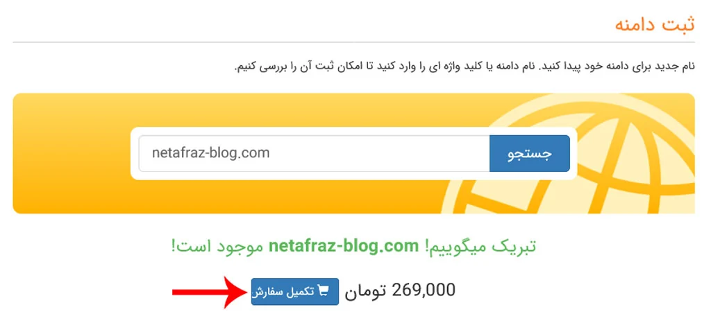
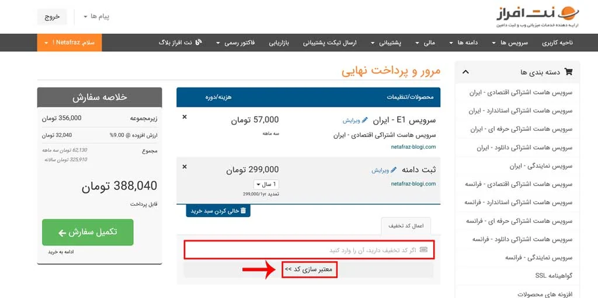
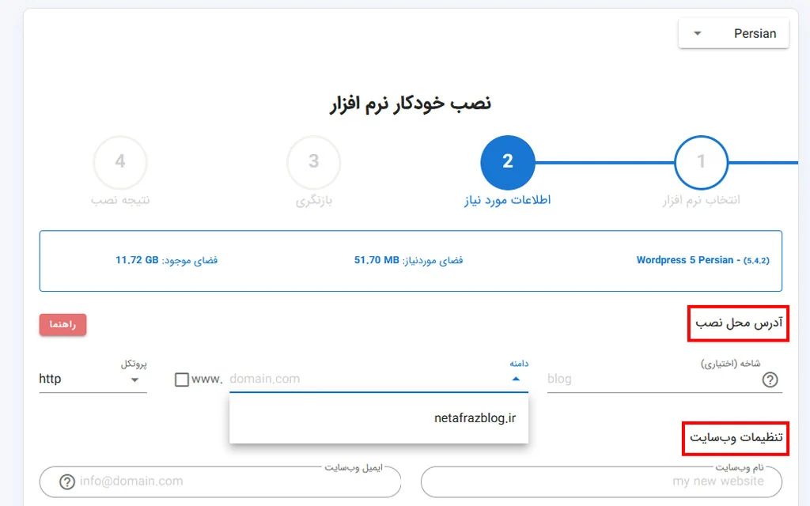
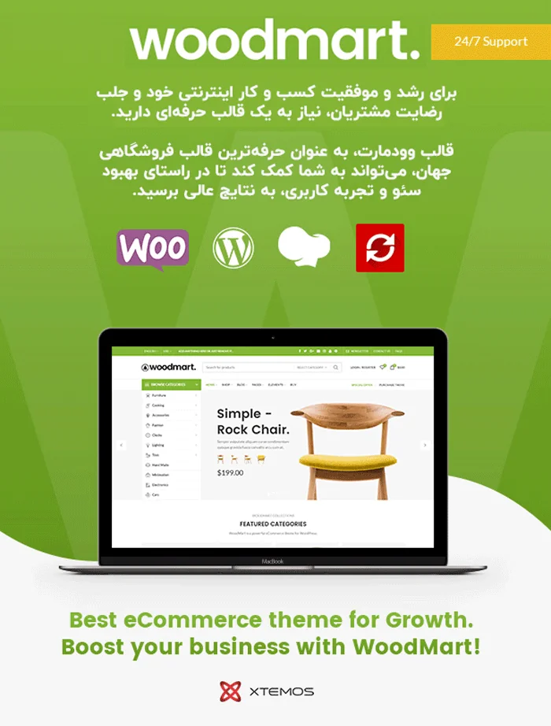

آموزش ساخت سایت در ۱ ساعت با وردپرس - از هاست تا انتشار
از انتخاب هاست و دامنه در نتافراز تا نصب وردپرس و آماده کردن اولین صفحه. اگر فروشگاه میسازی، مراحل نصب وودمارت و تست اولیهٔ سفارش را هم دنبال کن.
وردپرس چیست و چه سایتهایی میشود با آن ساخت؟
وردپرس یک سیستم مدیریت محتواست. بعد از نصب، از پیشخوان میتوانی برگه بسازی، نوشته منتشر کنی، تصویر اضافه کنی و منوی سایت را تغییر بدهی. هستهٔ وردپرس رایگان و متنباز است. هزینهٔ هاست، دامنه و قالب یا افزونهٔ پولی را جداگانه حساب کن.
با وردپرس میشود وبلاگ، سایت معرفی کسبوکار یا نمونهکار ساخت. ظاهر سایت را قالب تعیین میکند و افزونه قابلیت تازه اضافه میکند. مثلاً ووکامرس ابزار مدیریت محصول و سفارش را به وردپرس اضافه میکند و وودمارت چیدمان آمادهای برای نمایش فروشگاه و محصولات دارد.
فرق WordPress.org و WordPress.com چیست؟
در WordPress.org نرمافزار وردپرس را میگیری و روی هاست انتخابی خودت نصب میکنی. WordPress.com سرویس میزبانیشدهای است که ساخت سایت را در محیط خودش ارائه میدهد. در این آموزش از وردپرس روی هاست نتافراز استفاده میکنیم.
اگر هنوز هاست نداری و میخواهی پیشخوان را ببینی، وردپرس را در Playground امتحان کن. این محیط برای تمرین در مرورگر مناسب است. برای انتشار سایت اصلی، مسیر نصب روی هاست را دنبال کن.
دانلود وردپرس از منبع رسمی
برای نصب دستی، بستهٔ ZIP وردپرس را از سایت رسمی دریافت کن. صفحهٔ فارسی دکمهٔ دریافت و منابع فارسی را نشان میدهد. لینک مستقیم ZIP همیشه به بستهٔ پایدار رسمی اشاره میکند. اگر بستهٔ عمومی را دانلود کردی، در صفحهٔ نخست نصب میتوانی فارسی را بهعنوان زبان سایت انتخاب کنی.
فایل فشرده را برای بارگذاری در هاست نگهدار و از بخش نصب دستی وردپرس ادامه بده. اگر نصبکنندهٔ خودکار نتافراز در پیشخوان هاستت فعال است، همین ابزار فایلهای لازم را آماده میکند و دانلود جداگانه لازم نیست. برای جزئیات بیشتر، راهنمای رسمی نصب وردپرس را ببین.
در یک ساعت چه نوع سایتی میتوان ساخت؟
هدف این آموزش راهاندازی نسخهٔ اولیه است: وردپرس فعال، قالب نصبشده، صفحهٔ اصلی و راه تماس. اگر فروشگاه میسازی، میتوانی یک محصول آزمایشی هم اضافه کنی. درگاه واقعی، تنظیم ارسال، محتوای کامل و آزمودن سفارش قبل از شروع فروش به زمان جداگانه نیاز دارند. یک ساعت را از زمانی حساب کن که هاست و دامنه در دسترساند؛ تأیید دامنه، تغییر DNS یا صدور SSL گاهی بیرون از این بازه انجام میشوند.
| زمان تقریبی | کار | نتیجهٔ قابل بررسی |
|---|---|---|
| دقیقهٔ ۰ تا ۱۵ | ورود به پنل، بررسی اتصال دامنه و نصب وردپرس | صفحهٔ اصلی و /wp-admin باز میشوند. |
| دقیقهٔ ۱۵ تا ۳۵ | نصب قالب و تنظیم ظاهر اولیه | قالب فعال است و طرح انتخابی روی گوشی خواناست. |
| دقیقهٔ ۳۵ تا ۶۰ | افزودن معرفی، راه تماس و محتوای نمونه | بازدیدکننده میتواند هدف سایت را بفهمد و مسیر اصلی را پیدا کند. |
پیش از شروع، نام سایت، لوگو یا نام نوشتاری، یک پاراگراف معرفی، نشانی تماس و چند تصویر واقعی آماده کن. اگر هنوز دربارهٔ وردپرس، سایتساز و کدنویسی تصمیم نگرفتهای، مقایسهٔ روشهای ساخت سایت را بخوان.
خرید هاست و ثبت دامنه در نتافراز
هاست محل ذخیره و اجرای سایت است. دامنه نشانی سایت است، مثل example.com. میتوانی هر دو را همزمان سفارش بدهی، یا دامنهای را که از قبل داری به هاست تازه وصل کنی.
- در سایت رسمی نتافراز سرویسهای هاست را ببین. برای وردپرس، پشتیبانی از PHP و پایگاه داده، فضای لازم، بکاپ و شرایط تمدید را بررسی کن. برای فروشگاه، منابع مورد نیاز ووکامرس و عکس محصولات را هم در نظر بگیر.
- در مرحلهٔ انتخاب دامنه، برای دامنهٔ جدید نام پیشنهادی را جستوجو کن و گزینهٔ آزاد را به سبد بیفزا. اگر از قبل دامنه داری، گزینهٔ استفاده از دامنهٔ موجود را انتخاب کن. برای ثبت .ir شناسهٔ ایرنیک و اطلاعات مالک را آماده داشته باش.
- پیش از پرداخت، نام دامنه، مدت سرویس، هزینهٔ نهایی و تمدید را مرور کن. برای بررسی تخفیف هاست، یکی از کدهای بخش بعد را در سبد وارد کن.
- بعد از فعال شدن سرویس، از پنل کاربری نتافراز وارد مدیریت سرویس و DirectAdmin شو. اگر دامنه نزد ثبتکنندهٔ دیگری است، تنظیمات DNS را بر اساس اطلاعات سرویس انجام بده. برای دامنهای که ایمیل فعال دارد، قبل از تغییر DNS مطمئن شو رکوردهای ایمیل حفظ میشوند.

قبل از خرید، کدام مشخصات هاست را بررسی کنی؟
- سازگاری وردپرس: نسخههای PHP و پایگاه دادهٔ قابل انتخاب را با پیشنیازهای رسمی وردپرس و مستند قالب مقایسه کن. برای فروشگاه، محدودیت منابع و حجم مجاز بارگذاری را هم بررسی کن.
- بکاپ و تمدید: مشخص کن نسخهٔ پشتیبان هر چند وقت گرفته میشود، بازیابی چطور انجام میشود و هزینهٔ تمدید هاست و دامنه چقدر است. قیمت دورهٔ اول و تمدید را جدا بررسی کن.
- مالکیت دامنه: دامنه را با اطلاعات و ایمیلی ثبت کن که به آن دسترسی داری. املای دامنه و پسوند را پیش از ثبت نهایی دوباره بخوان.
اتصال دامنه و فعالسازی SSL در دایرکت ادمین
- اگر دامنه و هاست را با هم سفارش دادهای، اول وضعیت دامنه را در پنل بررسی کن. اگر دامنه را جدا خریدهای، نامسرورهای معرفیشده در اطلاعات همان سرویس هاست را در پنل ثبتکننده تنظیم کن. اگر DNS دامنه در سرویس دیگری مدیریت میشود، رکوردها را همانجا طبق راهنمای هاست بهروزرسانی کن. راهنمای تنظیم DNS نتافراز مسیر هر حالت را توضیح میدهد.
- بعد از اینکه دامنه به هاست درست اشاره کرد، در دایرکت ادمین بخش «گواهینامههای SSL» را باز کن و با گزینهٔ Let’s Encrypt برای نشانی مورد استفاده گواهی بگیر. اگر هر دو نشانی دامنه با و بدون www را استفاده میکنی، پوشش و اتصال هر دو را بررسی کن. مراحل فعالسازی گواهی در نتافراز را ببین.
- نشانی https:// را در پنجرهٔ خصوصی باز کن. وقتی بدون خطای گواهی باز شد، همان نشانی را برای نصب و لینکهای سایت استفاده کن. اگر صدور گواهی خطا داد، قبل از تکرار، اتصال دامنه و رکوردهای نشانیهای انتخابشده را چک کن.
کد تخفیف خرید هاست نتافراز
در مرحلهٔ مرور سفارش، یکی از کدها را در بخش «اعمال کد تخفیف» وارد کن و روی «معتبرسازی» بزن. کدها را جداگانه امتحان کن و فقط وقتی پرداخت کن که کاهش مبلغ در جمع فاکتور دیده شود. این کدها برای بررسی تخفیف خرید هاست معرفی شدهاند. نتیجه به شرایط همان سبد خرید بستگی دارد.
UC276ERGUC680WHXUC002CCJUC446MYS

آموزش تصویری نصب وردپرس در دایرکت ادمین
روش اول: نصب خودکار وردپرس در نتافراز
- در DirectAdmin گزینهٔ «نصب نرمافزارهای مدیریت محتوا» را پیدا کن. جای این گزینه با توجه به پوستهٔ پنل ممکن است در بخش تنظیمات پیشرفته یا امکانات اضافه باشد.
- وردپرس را انتخاب کن و مطمئن شو دامنهٔ مقصد درست است. برای نصب سایت تازه در ریشهٔ دامنه، کادر شاخه را خالی بگذار. اگر مقصد از قبل سایت دارد، از آن بکاپ بگیر و نصب را روی محیط آزمایشی یا دامنهٔ جدا انجام بده.
- نام سایت، ایمیل مدیر و مشخصات ورود را وارد کن. نام کاربری قابل حدس و رمز تکراری به کار نبر. اطلاعات را مرور کن و نصب را آغاز کن.
- پس از تأیید نصب، نشانی دامنه و سپس example.com/wp-admin/ را باز کن. اگر با مشخصات مدیر وارد پیشخوان شدی، نصب موفق است.

روش دوم: نصب دستی وردپرس
اگر نصبکننده در پنل در دسترس نیست، بستهٔ ZIP را از بخش دانلود رسمی وردپرس دریافت کن. در مدیریت فایل، بسته را در مسیر عمومی دامنهٔ مورد نظر استخراج کن و برای نصب در ریشه، محتویات پوشهٔ wordpress را در public_html همان دامنه قرار بده. برای یک سایت موجود، مسیر عمومی را بدون بکاپ و برنامهٔ مهاجرت جایگزین نکن.
در بخش MySQL، یک پایگاه داده و کاربر اختصاصی بساز و دسترسی آن کاربر را به همان پایگاه بده. نام کامل پایگاه و کاربر را همراه با پیشوند حساب یادداشت کن. دامنه را باز کن، زبان فارسی و مشخصات پایگاه را وارد کن و حساب مدیر را بساز. مقدار میزبان دیتابیس را از اطلاعات هاست بردار. برای مراحل کامل، راهنمای نصب دستی وردپرس در نتافراز را دنبال کن.
اگر وردپرس خطای اتصال پایگاه داده داد، قبل از ساخت پایگاه تازه، نام کامل پایگاه، کاربر، رمز، میزبان و دسترسی آن کاربر را بررسی کن. در نصب دستی، بعد از اتمام کار، فایل ZIP نصب را از مسیر عمومی پاک کن.
بعد از نصب وردپرس، پیشخوان را چطور آماده کنی؟
ابتدا چند تنظیم پایه را انجام بده تا هنگام نصب قالب و افزودن محتوا مجبور نشوی نشانیها یا ساختار صفحهها را دوباره عوض کنی.
- عنوان، زبان و زمان: در «تنظیمات ← عمومی» عنوان واقعی سایت، زبان فارسی و منطقهٔ زمانی مناسب را مشخص کن. اگر HTTPS هنوز خطا دارد، پیش از تغییر نشانیهای وردپرس مشکل گواهی را حل کن.
- صفحههای اولیه: در «برگهها» صفحههای خانه، درباره و تماس را بساز. در صفحهٔ تماس یک راه ارتباطی واقعی بگذار. بعد از «تنظیمات ← خواندن» گزینهٔ برگهٔ ایستا و صفحهٔ خانه را انتخاب کن. مستند تنظیمات خواندن وردپرس تفاوت برگهٔ ثابت و فهرست نوشتهها را توضیح میدهد.
- پیوندهای یکتا: برای سایت تازه میتوانی در «تنظیمات ← پیوندهای یکتا» ساختار خوانایی مثل «نام نوشته» را انتخاب کنی. اگر سایت از قبل بازدید دارد، پیوندهای موجود را بدون برنامهٔ ریدایرکت تغییر نده. مستند رسمی پیوندهای یکتا را ببین.
- تمیزکاری و پشتیبانگیری: نوشتهها و برگههای پیشفرضی را که استفاده نمیکنی حذف کن و پیش از وارد کردن دمو یا نصب افزونههای تازه از فایلها و دیتابیس بکاپ بگیر.
برای اولین نسخه، یک معرفی روشن، یک تصویر واقعی و یک دکمهٔ تماس کافی است. پیش از اضافه کردن اسلایدر یا بخشهای زیاد، ببین کاربر تازه در موبایل میتواند بفهمد چه خدمتی ارائه میکنی و چطور باید با تو ارتباط بگیرد.
پیشنهاد قالب وودمارت برای سایت فروشگاهی
اگر هدفت فروشگاه وردپرسی است، WoodMart را برای ساخت صفحههای فروشگاه و محصول با ووکامرس بررسی کن. پیش از خرید، مشخصات نسخه، شرایط بهروزرسانی و پشتیبانی و سازگاری با افزونههایی را که لازم داری در صفحهٔ محصول بخوان. برای وبلاگ یا سایت معرفی ساده، یک قالب سبکتر را هم در نظر بگیر.

- پس از دریافت قالب، فایل ZIP قابل نصب قالب را طبق راهنمای بسته پیدا کن. در پیشخوان، از «نمایش ← پوستهها ← افزودن پوسته ← بارگذاری پوسته» همان فایل را بارگذاری و قالب را فعال کن.
- مراحل راهاندازی قالب را دنبال کن. افزونههای لازم برای طرح انتخابی را فعال کن و برای فروشگاه، ووکامرس را تنظیم کن. اگر قرار است فایلهای قالب را شخصیسازی کنی، از قالب فرزند استفاده کن.
- اگر دمو میخواهی، آن را ترجیحاً روی نصب تازه یا محیط آزمایشی وارد کن. بخشهای نمونه، لینکهای نمایشی، محصولات آزمایشی دموی قالب و تصاویر غیرضروری را بازبینی کن.
- در «تنظیمات ← خواندن» برگهٔ اصلی را انتخاب کن. لوگو و منو را تنظیم کن و روی گوشی فهرست محصولات، صفحهٔ محصول، سبد خرید و ثبت سفارش را آزمایش کن.
اگر سایت فروشگاهی است، اولین محصول را چطور اضافه کنی؟
پس از نصب ووکامرس، در «محصولات ← افزودن محصول جدید» یک محصول ساده با نام، تصویر، قیمت و وضعیت موجودی بساز. سپس محدودهٔ ارسال و روشهای پرداخت مناسب را تنظیم کن. با پنجرهٔ خصوصی، محصول را به سبد اضافه کن و مسیر سفارش تا پیام تأیید را ببین. تا وقتی پرداخت و ارسال را آزمایش نکردهای، خرید واقعی را باز نکن. برای تنظیمات ابتدایی از راهنمای راهاندازی ووکامرس کمک بگیر.
مستند رسمی نصب وودمارت مراحل بارگذاری و ورود دمو را توضیح میدهد. تنظیم پرداخت و ارسال واقعی را با یک سفارش آزمایشی از ابتدا تا پایان بررسی کن.
مشاهدهٔ قالب وودمارت در سئو پرشین ←چکلیست قبل از انتشار سایت وردپرسی
- دامنه با HTTPS باز شود و عنوان سایت، لوگو و راه تماس درست باشند.
- صفحهٔ اصلی، معرفی و تماس را در یک پنجرهٔ خصوصی و روی گوشی بررسی کن. لینکهای آزمایشی یا تصاویر نمونه را جایگزین کن.
- پیوندهای یکتا را تنظیم کن و برای صفحههای مهم عنوان و توضیح مرتبط بنویس. اگر گزینهٔ جلوگیری از نمایهسازی را هنگام ساخت روشن کردهای، پس از آمادهشدن نسخهٔ عمومی آن را بازبینی کن.
- از فایلها و پایگاه داده نسخهٔ پشتیبان بگیر. وردپرس، قالب و افزونههای مورد استفاده را بهروز نگهدار.
- برای فروشگاه، پیش از معرفی عمومی، یک سفارش آزمایشی کامل بزن و نتیجهٔ پرداخت، ایمیل سفارش و هزینهٔ ارسال را کنترل کن.
اگر میخواهی تفاوت این مسیر را با ساخت سایت با کمک دستیار کدنویسی ببینی، آموزش وایب کدینگ از صفر را دنبال کن. برای برآورد اجرای پروژه هم خدمات طراحی سایت وحید پارسا را ببین.
رفع خطاهای رایج هنگام ساخت سایت وردپرسی
| نشانه | چه چیزی را بررسی کنی؟ |
|---|---|
| دامنه صفحهٔ پیشفرض هاست را نشان میدهد | اول بررسی کن دامنه به سرویس درست وصل است. بعد ببین وردپرس در ریشهٔ دامنه نصب شده یا داخل پوشهای مثل /wordpress/. |
| صفحهٔ ورود خطای گواهی میدهد | بررسی کن گواهی دقیقاً برای همان نشانی صادر شده است. ابتدا HTTPS را درست کن و سپس با مشخصات مدیر وارد شو. |
| خطا در برقراری ارتباط با پایگاه داده | نام کامل پایگاه و کاربر، رمز، میزبان دیتابیس و مجوز دسترسی کاربر به همان پایگاه را تطبیق بده. پایگاه را برای آزمایش حذف نکن. |
| قالب بهخاطر نبودن style.css نصب نمیشود | بستهٔ اصلی خرید ممکن است حاوی راهنما و چند فایل باشد. فایل ZIP قابل نصب قالب را مطابق راهنمای بسته پیدا کن و همان فایل را بارگذاری کن. |
| درونریزی دمو متوقف میشود | بکاپ و فضای آزاد را بررسی کن، افزونههای لازم قالب را چک کن و محدودیتهای PHP را با مستند قالب تطبیق بده. تا وقتی معلوم نیست چه بخشی وارد شده، دوباره واردسازی کامل را اجرا نکن. |
سؤالهای رایج ساخت سایت با وردپرس
آیا واقعاً یکساعته میشود سایت را منتشر کرد؟
اگر هاست و دامنه فعالاند و متن و عکس آمادهاند، نسخهٔ اولیهٔ یک سایت ساده میتواند در این بازه آماده شود. زمان تأیید دامنه، نصب گواهی، آمادهسازی فروشگاه واقعی و تست درگاه جداست.
آیا کد خرید هاست برای دامنه یا تمدید هم کار میکند؟
این کدها را برای خرید هاست در سبد امتحان کن. تخفیف ثبت یا تمدید دامنه شرایط جداگانه دارد. معیار، پیام معتبرسازی و مبلغ نهایی فاکتور است.
وودمارت برای نصب وردپرس ضروری است؟
خیر. وردپرس پس از نصب با پوستهٔ پیشفرض اجرا میشود. وودمارت را زمانی بررسی کن که امکانات و چیدمان فروشگاهی آن برای پروژهات نیاز باشد.
چرا دامنه پس از نصب هنوز صفحهٔ قبلی را نشان میدهد؟
اول نشانی و پوشهٔ مقصد نصب را چک کن. اگر دامنه را تازه وصل کردهای، تنظیم DNS و وضعیت فعالسازی را بررسی کن. صفحه را در پنجرهٔ خصوصی باز کن تا اثر کش مرورگر را هم جداگانه بسنجی.